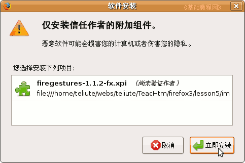
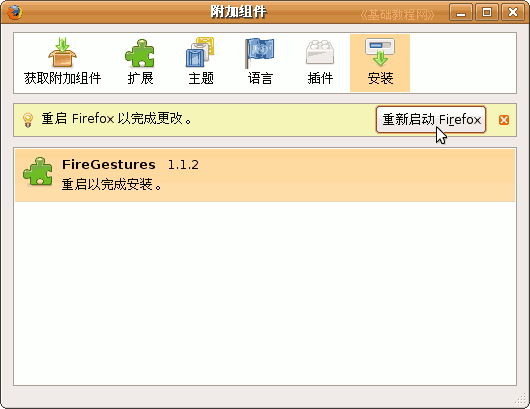
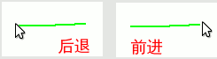
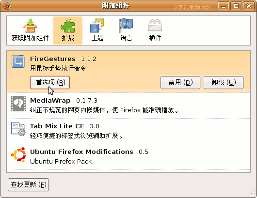
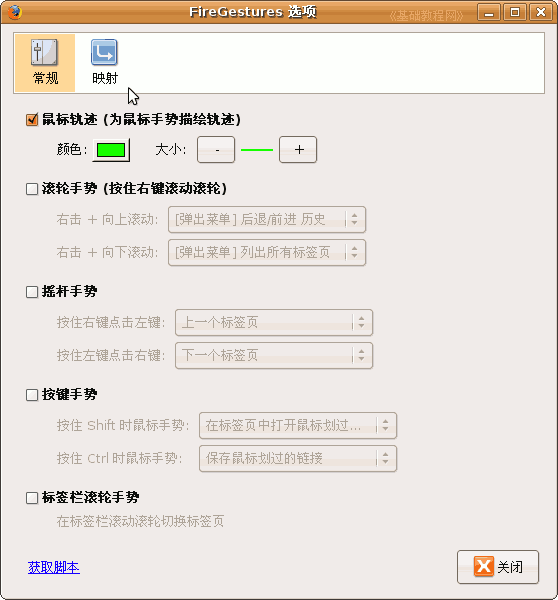
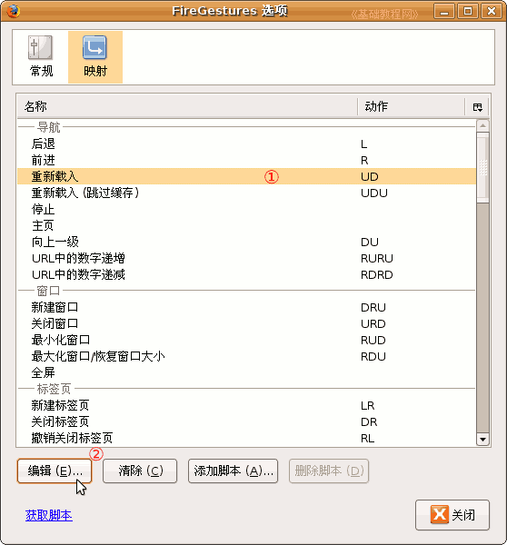
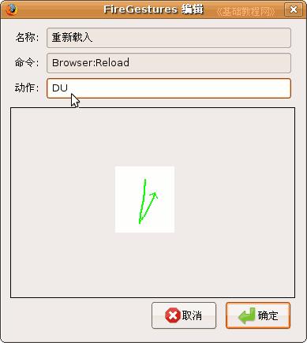
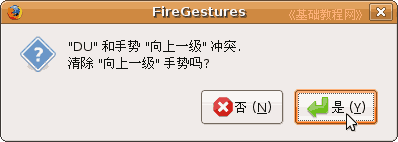
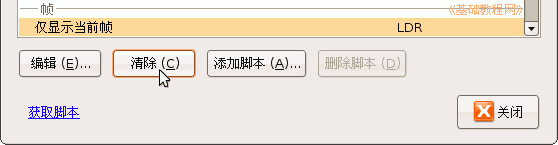
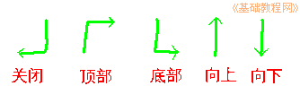

Firefox3 基础教程
作者：TeliuTe 来源：基础教程网
五、FireGestures 扩展 返回目录 下一课安装FireGestures扩展，可以很方便地使用鼠标右键手势，使得浏览更简便快捷，扩展大小48KB，下面我们来看一个练习；
1、FireGestures 鼠标手势
1）下载地址：https://addons.mozilla.org/Zh-CN/firefox/addon/firegestures/；
进去以后点“添加到 Firefox－立即安装”；
本地下载：firegestures-1.6.7-fx.xpi在下载链接上点右键，选“链接另存为”，注意是一个xpi文件
2）安装：先打开Firefox窗口，然后把xpi文件拖到窗口里，出来一个安装对话框，
稍等一会儿，点下面的“立即安装”进行安装；

3）接下来出来一个要求“重启”的对话框，点下边的“重新启动Firefox”；

重启以后完成安装，默认使用右键手势，按住右键往左划一条绿线，就可以后退，往右划是前进；

2、选项设置
1）点菜单“工具－附加组件”进入扩展管理器，
找到FireGestures，单击选中，然后点它下边的“首选项”按钮点菜单；

2）在出来的“常规”标签里，可以把不用的手势去掉；

3）在上面点第二个“映射”标签，我们来自定义一些常用的手势，
定义的方法是，选中一个操作，然后点下面的“编辑”，也可以直接双击；

4）选择“重新载入”，点“编辑”出来一个面板，把里面的 UD 改成DU，
D是向下，U是向上，也就是按住右键，先往下再往上划一下，点“确定”，出来一个冲突的提示，点“是”；
 
5）同样可以把不用的手势，选中后点下边的“清除”按钮；

6）常用的一些手势可以按如下设置（L是向左，R是向右），
关闭标签页－DL；滚动到顶部－UR；滚动到底部－DR；向上翻页－U；向下翻页－D；

本节学习了 FireGestures 扩展的安装和设置，如果你成功地完成了练习，请继续学习下一课内容；本教程由86团学校TeliuTe制作|著作权所有
基础教程网：http://teliute.org
美丽的校园……
转载和引用本站内容，请保留作者和本站链接。